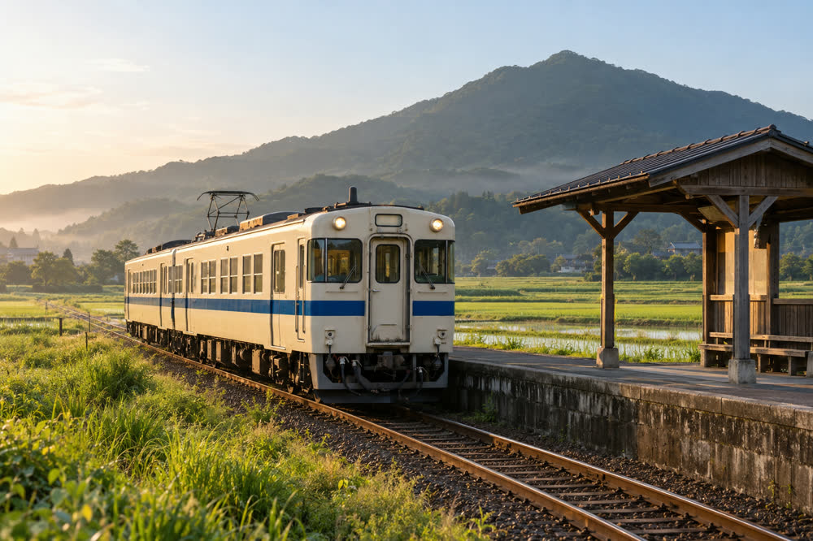
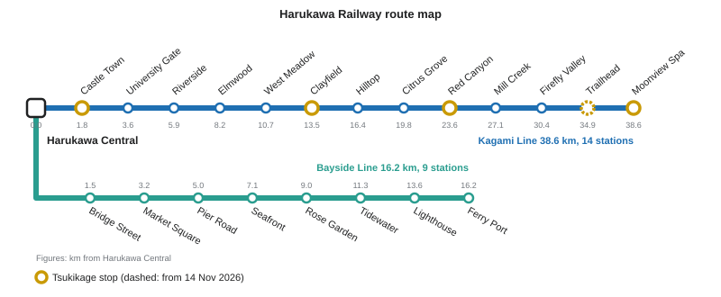
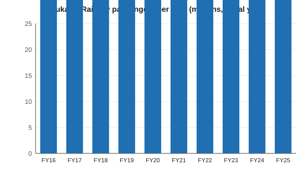

Harukawa Railway
| Harukawa Railway Co., Ltd. 春川鉄道株式会社 | |
|---|---|
 A 2000 series local train of the Kagami Line at Hotarudani | |
| Company | |
| Nickname | HaruTetsu (ハルテツ) |
| Type | Private company (kabushiki gaisha) |
| Founded | 1923, as the Kagami Valley Railway |
| Renamed | 1951 |
| Headquarters | Harukawa Central Terrace, 1-1 Ekimae-chō, Harukawa, Minori Prefecture |
| Key people | Kōsuke Hayami (president) |
| Revenue | ¥8.9 billion (FY2024) |
| Employees | 684 (April 2026) |
| Railway | |
| Lines | Kagami Line (38.6 km) Bayside Line (16.2 km) |
| Route length | 54.8 km |
| Stations | 22 |
| Track gauge | 1,067 mm |
| Electrification | 1,500 V DC overhead |
| Fleet | 46 cars |
| Passengers | about 41 million (FY2025) |
| IC card | HaruCa |

The Harukawa Railway (春川鉄道, Harukawa Tetsudō), commonly known as HaruTetsu (ハルテツ), is a private railway company based in Harukawa, the capital of Minori Prefecture, Japan. It operates two electrified lines with a combined length of 54.8 km and 22 stations: the Kagami Line, which climbs 38.6 km up the valley of the Kagami River to the hot-spring town of Tsukimi Onsen, and the Bayside Line, which runs 16.2 km along the north shore of Minori Bay to Minori Port. Both lines start at Harukawa Central Station, whose station building also houses the company's head office. In fiscal year 2025 the railway carried about 41 million passengers, with 112,430 boardings a day; it had 684 employees in April 2026, and its operating revenue in FY2024 was ¥8.9 billion.[1]
The company was founded in 1923 as the Kagami Valley Railway (鏡谷鉄道, Kagamidani Tetsudō) and opened its first section, from Harukawa to Kamano, in 1926 under its chief engineer Kenzō Hattori. It took its present name in 1951. Its best-known train is the limited express Tsukikage, which links Harukawa Central and Tsukimi Onsen in 39 minutes. The company also issues the HaruCa contactless IC card.
History[edit]
Kagami Valley Railway (1923–1951)[edit]
The Kagami Valley Railway was founded in 1923 with a capital of ¥300,000, subscribed mainly by merchants of Gofukumachi and Uomachi and by the Minori Bank. Its promoters wanted to carry Harukawa ware from the kilns of Suyama, and timber and charcoal from the upper valley, to the town and the port, and to bring visitors to the springs of Tsukimi Onsen.[2] The board engaged Kenzō Hattori, a native of Uomachi who had spent 25 years with the government railways, as chief engineer. He planned a route along the river, built from the start to the 1,067 mm gauge of the national network. The first 13.5 km, from Harukawa to Kamano, opened on 15 July 1926, worked by four small steam tank locomotives imported from Germany.
The line then advanced up the valley in three stages: to Yuzuhara on 20 May 1928, across the new Futamata Bridge to Hotarudani on 3 November 1929, and through the 2,184 m Tsukimi Tunnel to Tsukimi Onsen on 4 October 1931. The arrival of the railway turned Tsukimi Onsen into a resort. Hattori was president of the company from 1931 to 1938. The air raid of 29 July 1945 destroyed the wooden Harukawa Station building of 1926 and several cars, but trains were running again to Kamano within a week.[citation needed]
Harukawa Railway (1951–1986)[edit]
The company was renamed the Harukawa Railway in 1951, and the Kagami Line was electrified at 1,500 V DC in 1952. On 1 October 1962 it opened the Bayside Line to Minori Port, which carried both passengers and freight from the start and served the port and the Harukawa Shipyard; Harukawa Station was renamed Harukawa Central the same day. The line had been strongly promoted by the mayor Tetsuo Saeki, whose city was spreading along the bay after the 1954 merger with four villages.[3] Double track on the Kagami Line was extended to Kamano in 1968.
Tsukikage and modernization (1987–2010)[edit]
In 1987 the company introduced the limited express Tsukikage, using the new 6000 series, and freight traffic ended the same year. New rolling stock followed: the 2000 series for Kagami Line locals in 1996 and the 5000 series for the Bayside Line in 2004. In 1998 the Bayside Line was raised onto a viaduct between Harukawa Central and Shinkō-dōri.
Since 2011[edit]
On 26 March 2011 the company opened the elevated Harukawa Central Station and its new station building, Harukawa Central Terrace, and moved its head office there.[4] The HaruCa card was introduced in 2012. The Tsukikage 8000 series replaced the 6000 series on 16 March 2019. During the COVID-19 pandemic ridership fell to 29.8 million in FY2020, the lowest since the 1950s;[citation needed] by FY2025 it had recovered to 41.0 million, about 97 % of the FY2019 level. A phone version of the card, Mobile HaruCa, followed in 2024.
A timetable revision on Saturday 14 November 2026 adds a stop at Tsukimi-guchi to every Tsukikage (41 minutes from end to end), stops rapid trains at Kawabata, runs Bayside Line trains every 15 minutes instead of every 20 on weekdays between 10:00 and 16:40, and makes some last trains later on both lines. Fares, surcharges and pass prices do not change.[5]
Lines[edit]


| Line | Japanese | Route | Length | Stations | Opened |
|---|---|---|---|---|---|
| Kagami Line | 鏡線 | Harukawa Central – Tsukimi Onsen | 38.6 km | 14 | 15 July 1926 |
| Bayside Line | 湾岸線 | Harukawa Central – Minori Port | 16.2 km | 9 | 1 October 1962 |
The two lines total 54.8 km and 22 stations, as Harukawa Central is shared.[a] Both are built to 1,067 mm gauge and electrified at 1,500 V DC. The Kagami Line is double track for its first 13.5 km to Kamano and single track with passing loops beyond; its maximum speed is 95 km/h and its ruling gradient 25 ‰, between Hotarudani and Tsukimi Onsen. It is served by local trains (63 minutes from end to end), hourly rapid trains (55 minutes) and the Tsukikage (39 minutes). The Bayside Line is double track and elevated for 5.0 km from Harukawa Central to Shinkō-dōri; its trains stop at every station and take 28 minutes, running every 15 minutes in the weekday peaks and every 20 minutes on weekday middays and at weekends.
Rolling stock[edit]

The company owns 46 cars of three series, all electric multiple units built by Nishiura Sharyō (西浦車輌) of Nishiura.[1] They are maintained at Kamano Depot on the Kagami Line and at Kaigan Depot on the Bayside Line.
| Series | Used on | Introduced | Formation | Sets | Cars | Livery |
|---|---|---|---|---|---|---|
| 2000 series | Kagami Line locals and rapids | 1996 | 2 cars | 8 | 16 | Cream with river-blue stripe |
| 5000 series | Bayside Line | 2004 | 3 cars | 7 | 21 | White with sea-green stripe |
| 8000 series | Limited express Tsukikage | 2019 | 3 cars | 3 | 9 | Navy blue with gold stripe |
The 8000 series was designed for 120 km/h but runs at no more than 95 km/h, the Kagami Line's limit. Retired series include the 1000 series of 1965, which the 2000 series replaced, and the 6000 series (1987–2019), the first Tsukikage trains, whose set 6001 is preserved at Tsukimi Onsen Station.
Ridership[edit]


The railway carried 43.9 million passengers in FY2016 and 42.4 million in FY2019 before the pandemic cut traffic to 29.8 million in FY2020. Numbers have risen every year since, to 33.0 million in FY2021, 37.3 million in FY2022, 39.6 million in FY2023, 40.4 million in FY2024 and 41.0 million in FY2025, still below the FY2019 level. In FY2025 there were 112,430 boardings a day: 38,420 at Harukawa Central, 43,590 at the other Kagami Line stations and 30,420 at the other Bayside Line stations.[6] The Tsukikage carries about 400,000 passengers a year. Harukawa Central is by far the busiest station; Hotarudani, with 190 boardings a day, is the quietest. The busiest days of the year are the weekend of the Harukawa Lantern Festival in October.
Fares and tickets[edit]
Fares are charged by distance, from ¥170 for up to 3 km to ¥970 for the longest journey, from Minori Port to Tsukimi Onsen. Fares paid with HaruCa are up to ¥18 cheaper, and children pay half, rounded down to the nearest ¥10.[b] Fares were last revised on 1 October 2019, when the consumption tax rose to 10 %.[7]
| To | Line | Distance | Adult | HaruCa | Child |
|---|---|---|---|---|---|
| Honmachi | Bayside | 1.5 km | ¥170 | ¥168 | ¥80 |
| Shiromachi | Kagami | 1.8 km | ¥170 | ¥168 | ¥80 |
| Harukawa Daigaku-mae | Kagami | 3.6 km | ¥210 | ¥209 | ¥100 |
| Kamano | Kagami | 13.5 km | ¥330 | ¥324 | ¥160 |
| Minori Port | Bayside | 16.2 km | ¥410 | ¥402 | ¥200 |
| Kagami-kyō | Kagami | 23.6 km | ¥490 | ¥481 | ¥240 |
| Tsukimi Onsen | Kagami | 38.6 km | ¥730 | ¥715 | ¥360 |
All seats on the Tsukikage are reserved and require a limited express surcharge on top of the fare: ¥520 for up to 25 km and ¥760 for 26 km or more, ¥200 more on peak dates and ¥260 more if bought on board. A seat in the Premium car costs ¥700 more. A trip from Harukawa Central to Tsukimi Onsen by Tsukikage therefore costs ¥1,490, or ¥2,190 in the Premium car.[7] The 1-Day Pass (¥1,300 on weekdays, ¥1,100 on Saturdays, Sundays and holidays; children half) covers local and rapid trains on both lines but not the limited express surcharge, and the Tsukimi Onsen Yukemuri Ticket (¥2,800) combines a return trip to Tsukimi Onsen with a Tsukikage seat each way, a visit to a public bath and a ¥500 voucher.
The HaruCa IC card, introduced in 2012, can be used at every station and on Harukawa City Bus and Tsukimi Bus, but not on the airport limousine bus. It requires a ¥500 deposit and holds up to ¥20,000; about 410,000 cards were in circulation in 2024.
Connecting buses[edit]
HaruTetsu does not operate buses. Local buses are run by the municipal Harukawa City Bus, whose routes include the City Bus 1 Castle Loop from Harukawa Central and City Bus 21 to the Kamano Pottery Village, and in the upper valley by Tsukimi Bus, whose route 5 runs from Tsukimi Onsen Station to the Tsukimi Ropeway on Mount Tsukimi (25 minutes, ¥480, every 40 minutes, last bus 16:20). The airport limousine bus to Minori Airport leaves from the South Exit of Harukawa Central every 30 minutes and takes 55 minutes (¥1,300).[8]
See also[edit]
Notes[edit]
References[edit]
- ^ a b Harukawa Railway (2026). HaruTetsu Fact Book 2026. Harukawa Railway Co., pp. 2–5.
- ^ Harukawa Railway (2023). One Hundred Years of HaruTetsu. Harukawa Railway Co., pp. 12–19.
- ^ Harukawa City History Compilation Committee (1989). Harukawa City History, vol. 4: Modern. Harukawa City, pp. 402–411.
- ^ "New Harukawa Central opens: 30,000 visit Terrace on first day". Harukawa Nippō, 27 March 2011, p. 1.
- ^ Harukawa Railway (2026). "Timetable revision on Saturday 14 November 2026". Notice, October 2026.
- ^ Minori Prefecture (2026). Minori Prefecture Transport Statistics, FY2025. Minori Prefecture Planning Department, p. 37.
- ^ a b Harukawa Railway (2019). Passenger Fare Tariff, revised edition. Harukawa Railway Co., pp. 4–9.
- ^ Harukawa City Transportation Bureau (2026). Harukawa City Bus Route Guide 2026. Harukawa City, p. 3.
Further reading[edit]
- Mori, Takahiro (1998). Private Railways of Western Japan. Tetsudō Shoin, pp. 144–151.